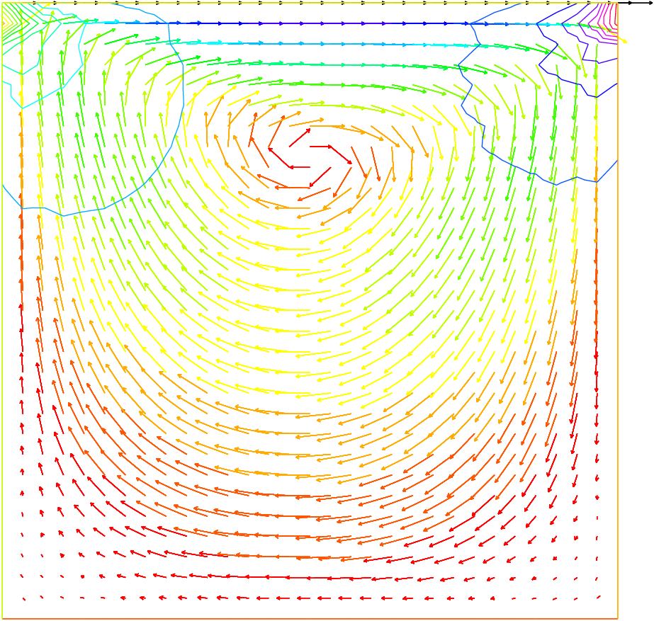

The System of Stokes for Fluids¶
In the case of a flow invariant with respect to the third coordinate (two-dimensional flow), flows at low Reynolds number (for instance micro-organisms) satisfy,
\[\begin{split}-\Delta \mathbf{u} + \nabla p &= 0\\
\nabla\cdot \mathbf{u} &= 0\end{split}\]
where \(\mathbf{u}=(u_1,u_2)\) is the fluid velocity and \(p\) its pressure.
The driven cavity is a standard test. It is a box full of liquid with its lid moving horizontally at speed one. The pressure and the velocity must be discretized in compatible fintie element spaces for the LBB conditions to be satisfied:
\[\sup_{p\in P_h}\frac{(\mathbf{u},\nabla p)}{|p|}\geq \beta|\mathbf{u}|~~~\forall \mathbf{u}\in U_h\]
// Parameters
int nn = 30;
// Mesh
mesh Th = square(nn, nn);
// Fespace
fespace Uh(Th, P1b);
Uh u, v;
Uh uu, vv;
fespace Ph(Th, P1);
Ph p, pp;
// Problem
solve stokes ([u, v, p], [uu, vv, pp])
= int2d(Th)(
dx(u)*dx(uu)
+ dy(u)*dy(uu)
+ dx(v)*dx(vv)
+ dy(v)*dy(vv)
+ dx(p)*uu
+ dy(p)*vv
+ pp*(dx(u) + dy(v))
- 1e-10*p*pp
)
+ on(1, 2, 4, u=0, v=0)
+ on(3, u=1, v=0)
;
// Plot
plot([u, v], p, wait=1);
Note
We add a stabilization term \(\bf{-10e-10*p*pp}\) to fix the constant part of the pressure.
Results are shown on Fig. 56.

Fig. 56 Solution of Stokes’ equations for the driven cavity problem, showing the velocity field and the pressure level lines.